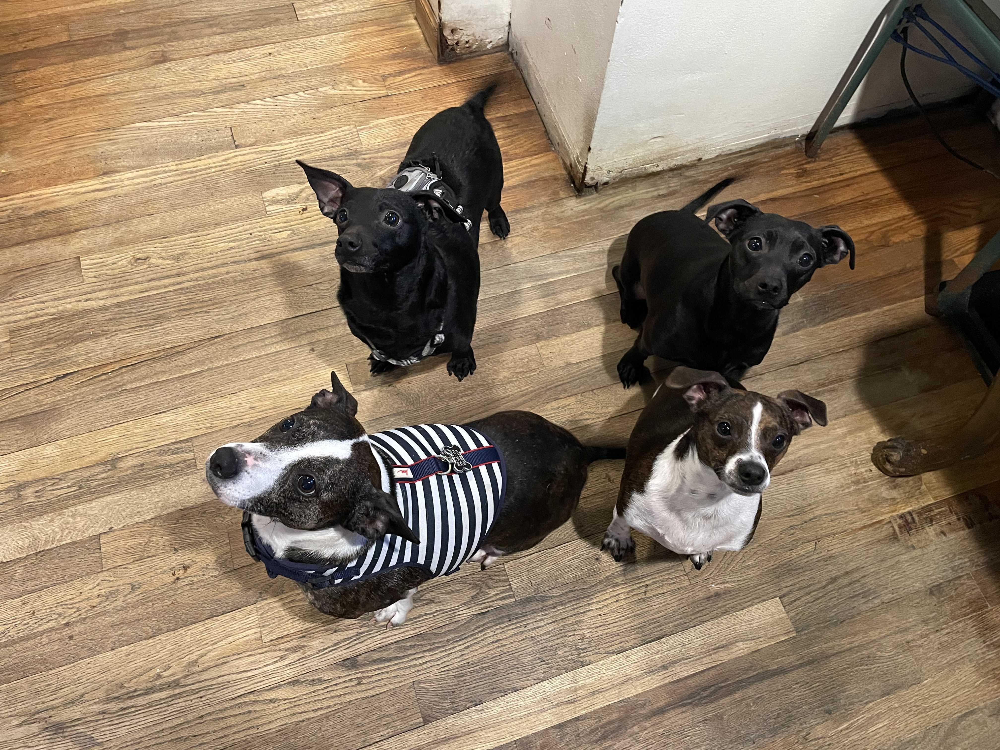
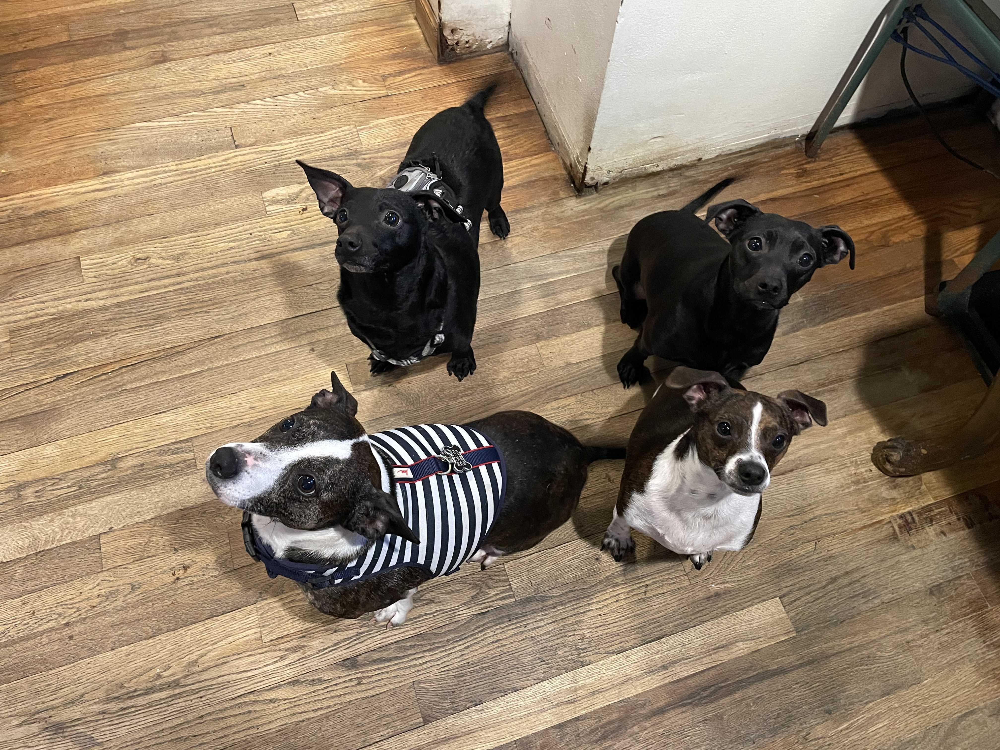

My dogs!
As mentioned in my "free time" tab, I mentioned that I have 4 dogs so here are pictures of the 4 of them. I have always wanted dogs but growing up my dad didnt want us to have any pets. We ended up getting 2 cats because of my mom but I finally got my childhood dream of owning dogs. 
